机器指令 链接到标题
机器指令的定义 链接到标题
计算机唯一能识别的语言是机器语言，而机器语言是由一条条语句构成，人们习惯把构成机器语言的这些语句称为机器指令，全部机器指令的集合又称为机器的指令系统。
机器指令的格式 链接到标题
一条指令由操作码和地址码组成，指令的字长分为固定字长和可变字长。
操作码 链接到标题
- 长度固定，用于指令字长较长的情况，RISC。如 IBM370，操作码 8 位
- 长度可变，操作码分散在指令字的不同字段中，不允许较短操作码是较长操作码的前缀，各条指令操作码不能重复。
- 扩展操作码技术，操作码的位数随地址数的减少而增加
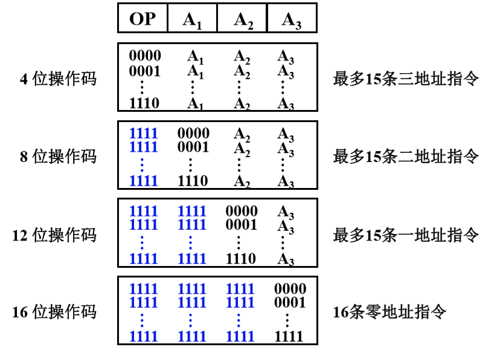
三地址指令操作码，每减少一种最多可构成
$2^4$种二地址指令 二地址指令操作码，每减少一种最多可多构成$2^4$种一地址指令
地址码 链接到标题
地址码也被称为操作数字段，地址码的作用：
- 需要指出操作数的地址，即用哪里的数来操作。
- 需要指出操作后的结果放在哪里，即给出结果存放的地址。
- 需要指出该条指令执行结束后怎么办，即需要指出下一条指令的地址。
- 四地址
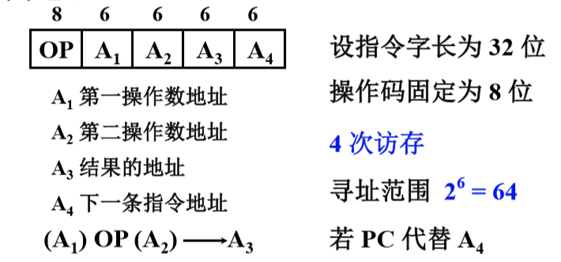
A4 用于存放下一条将要执行指令的地址，若指令字长 32 位，操作码 8 位，四个地址码字段各 6 位，直接寻址范围 $2^6=64$,访存 4 次
- 三地址
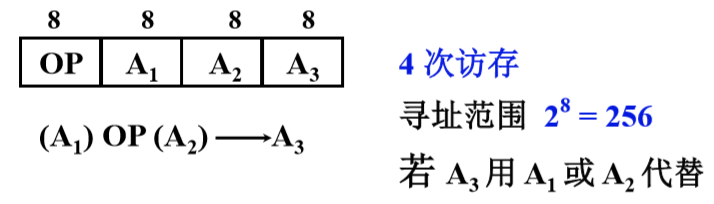
A1 与 A2 进行 OP 后，结果保存在 A3 中，假设指令字长 32 位，操作码 8 位，地址码各 8 位，寻址范围 $2^8=256$，若地址字段均为主存地址，需要四次访存。
- 二地址
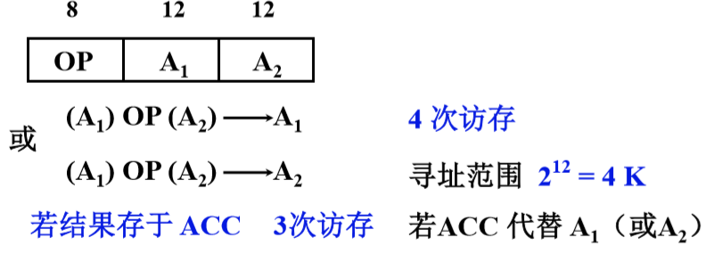
A1 与 A2 进行 OP 后，结果存入 A1 或 A2 中，假设指令字长 32 位，操作码 8 位，地址码各 12 位，寻址范围 $2^{12}=4K$
- 一地址
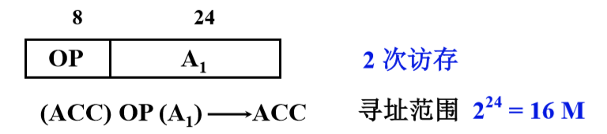
从 A1 读取操作数，进行 OP 操作后，操作码字段通常为加一，减一，求反求补等。 指令可隐含约定另一个操作数由 ACC 提供，运算结果存放在 ACC 中。
- 零地址，无地址码 不需要操作数的指令，如空操作指令，停机指令，关中断指令等
指令字长 链接到标题
指令字长指一条指令所占用存储空间的大小，由于主存一般按字节编址，指令字长一般为字节的整数倍。若某指令长度等于机器字长，则称此指令为单字长指令，指令字长决定于操作码的长度，操作数地址的长度，操作数地址的个数。
数据字：计算机中某个字表示数据
指令字：计算机中某个字表示指令
- 指令字长固定，指令字长=存储子长
- 指令字长可变，按字节的倍数变化
小结 链接到标题
-
当用一些硬件资源代替指令字中的地址码字段后
- 可扩大指令的寻址范围
- 可缩短指令字长
- 可减少访存次数
-
当指令的地址字段为寄存器时
- 三地址 OP R1,R2,R3
- 二地址 OP R1,R2
- 一地址 OP R1
- 可缩短指令字长
- 指令执行阶段不访存
操作数 链接到标题
操作数类型 链接到标题
- 地址 无符号整数
- 数字 定点数、浮点数、十进制数
- 字符 ASCII
- 逻辑数 逻辑运算
数据在存储器中的存放方式 链接到标题
例 1，2，3，4，5，6，7，8，H 的存放方式 字地址为高字节地址
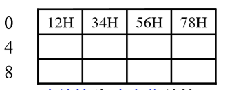
字地址为低字节地址
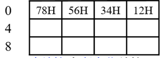
数据在存储器中的存放方式 链接到标题
从任意位置开始存储 链接到标题
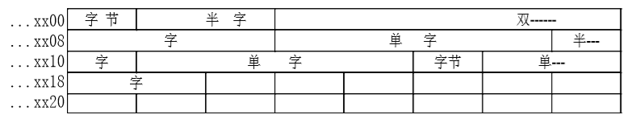
优点: 不浪费存储资源
缺点：除了访问第一个字节之外，访问其他任何类型的数据，都可能花费两个存储周期的时间，读写控制比较复杂。
从一个存储字的起始位置开始访问 链接到标题
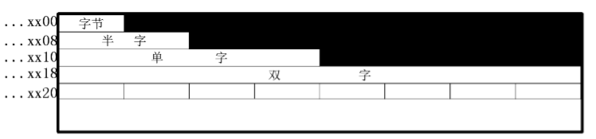
优点: 无论访问何种类型的数据，在一个周期内均可完成，读写控制简单。
缺点：浪费了宝贵的存储资源
边界对准方式，从地址的整数倍位置开始访问 链接到标题
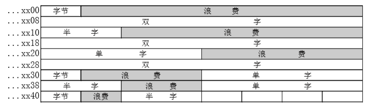
数据存放的起始地址是数据长度(按编址单位进行计算)的整数倍，本方案是前两个方案的折中。
操作类型 链接到标题
- 数据传送
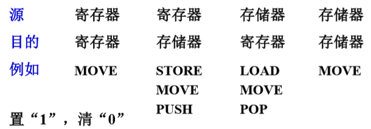
-
算术逻辑操作 加、减、乘、除、增 1、减 1、求补、浮点运算、十进制运算、与、或、非、异或、位操作、位测试、位清除、位求反. 如 8086：ADD SUB MUL DIV INC DEC CMP NEG AAA AAS AAM AAD AND OR NOT XOR TEST
-
移位操作
- 算术移位
- 逻辑移位
- 循环移位
-
转移
- 无条件转移 JMP
- 条件转移
- 结果为零转 (z=1) JZ
- 结果为溢出转 (o=1) JO
- 结果有进位转 (c=)1 JC
- 跳过一条指令 SKP
- 程序调用和返回
- 陷阱与陷阱指令
- 一般不提供给用户，出现事故时，由 CPU 自动产生
- 设置供用户使用的陷阱指令
-
输入输出